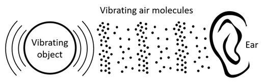
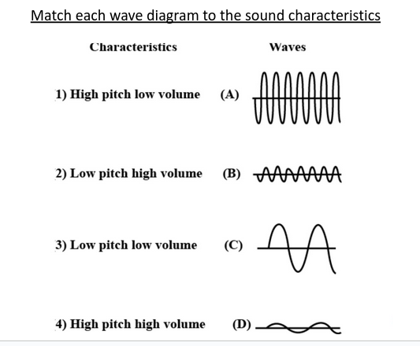

Science - Year 5
Naypyitaw International Science Academy
How do we hear sound?
Topic 2.1: How are sounds made?
Glossary
control variable: the variable that you keep the same during an investigation
dependent variable: the variable that you observe or measure during an investigation
independent variable: a variable that you can change
pluck: a verb to describe playing a stringed instrument (plucking a string)
vibrate: a verb which means to move backwards and forwards very fast
vibration: the noun that describes one of the backwards and forwards movements
Q. How does sound travel?
- Sound travels in waves that move in all directions.
- When the sound hits something, some or all of the sound is absorbed
- Soft surfaces absorb more sound energy than hard surfaces
- When sound hits a hard surface, it bounces back (not much is absorbed.
Q. How fast is sound?
- The speed of sound depends on the material through which it is moving.
- The speed of sound does not depend on how loud or soft the sound is.
- The speed of sound in cool air is $1235\; km/h$
- Sound travels faster in warm air than in cool air
A loud or a soft sound is identified by its volume.
Loud sound has a high volume while soft sound has a low volume
Not all sounds are the same. Some are loud and some are soft.
Q. What makes loud and soft sounds?
Big vibrations make loud sounds and small vibrations make soft sounds.
Q. The farther you are away from the sound, the softer it sounds to you. How can you explain this?
Vibrations become smaller as they get further away.
What is a decibel?
A: A decibel is a unit for comparing the loudness of two different sounds
Homework
Topic 2.2: Volume and Pitch
Glossary
decibel (dB): the unit we measure sound in
high-pitched: words we use to describe how high a sound is
low-pitched: words we use to describe how low a sound is
pitch: how high or low a sound is
sound level meter: a hand-held device to measure sound
volume: how loud or quiet a sound is
What is noise?
Noise is an unwanted or unpleasant sound caused by vibration of matter.
What is the opposite of noise?
- Notes are regular and have an accurate pattern.
- Notes are pleasing to our minds and ears.
- On the other hand, noise is a kind of disturbance and is irregular.
Q. What are the effects of noise pollution?
- Noise pollution can badly affect our ears and lead to deafness, especially in older people
- Noise pollution at night can interrupt deep sleep
- Noise pollution above 60db can cause stress levels to rise
Q. What are some causes of noise pollution?
The causes of noise pollution in residential areas include sounds from loudspeakers, vehicles, construction in nearby places.
Q. Is the material through which the sound was loudest a solid, liquid or a gas?
A solid
Q. Is wool a solid, liquid or a gas?
A solid
Q. Which kind of materials on the bar chart do sound travel through best?
Solids
Q. Identify the control, independent and dependent variable
control variables: The sound from the clock, the distance between the clock and the material.
independent variable: the material that they listen through
dependent variable: the loudness of the sound
Q. Which material did sound travel through best?
Wood
Q. Which material did sound travel through worst?
Water and air
Q. Do you think Zara and Sofia's results are accurate? Explain why or why not.
No. They did not keep the distance between the clock and the material the same, so this was not a fair test.
Q. What should Zara and Sofia do to get accurate results?
Make sure the distance between the clock and the material is the same each time they measure the volume of the sound.
Q. Draw a line from each of the sounds to match its volume
Vacuum cleaner: 70 dB; lawnmower: 100 dB; silence: 0 dB; loud rock concert: 120 dB; baby crying: 110 dB; children talking: 60 dB
Q. What is the unit of volume measured in on the drawing?
Decibel (db)
Q. Which of the sounds shown do you think has the highest pitch?
Baby crying has the highest pitch
Q. How could the boys have made accurate measurements?
They could have used a sound level meter.
Q. Identify the control, independent and dependent variables.
control variable: is the rating system of ticks they used to describe the volume of sounds.
independent variable: is the source of sound they measured.
dependent variable: is the volume of the sound.
Q. Which sound was quietest again?
Talking
Q. How are the vibrations different as sound gets softer?
The vibrations become smaller
Q. Describe how pitch vibrations are different to volume vibrations.
Pitch vibrations are fast or slow, whereas volume vibrations are big or small.
Q. Which material did sound travel through best?
Metal
Q. Explain why sound travels best through this material.
Metal is a solid. Particles are close together in a solid so they bump into each other and vibrate more.
Q. Identify the control, independent and dependent variable in this experiment.
control variable: the sound level meter
independent variable: was the material
dependent variable: was the measured sound volume
Q. Write a conclusion based on the data.
Sound travels best through solids, especially metals, and worst through air.
Q. How could Zara and Sofia make a more accurate conclusion?
Test more solids, liquids and gases to get more data.